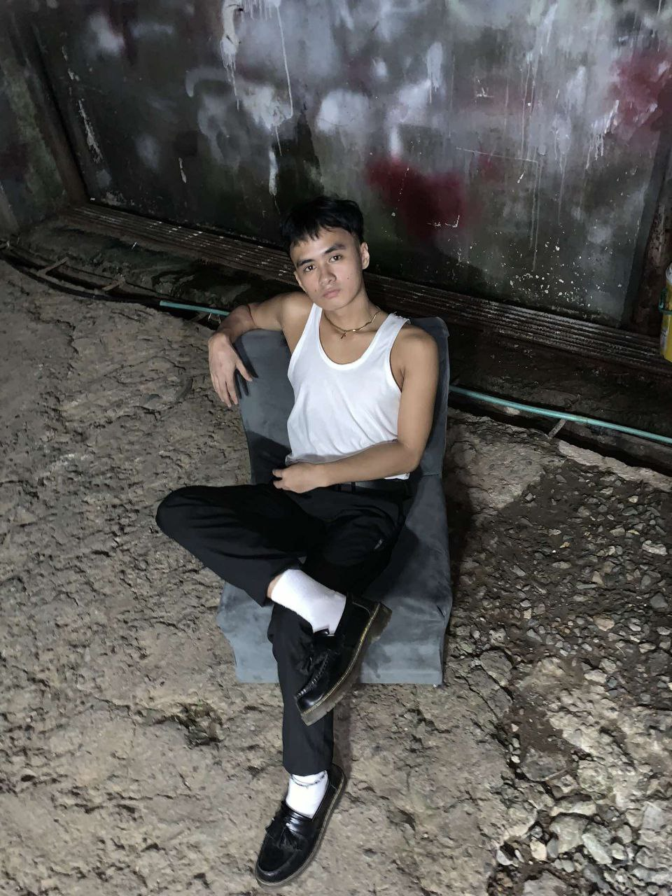

My Personal Portfolio
"Driven by passion, guided by innovation."
About Jay Allen Jose
Introducing Jay Allen Jose, a seasoned photographer and UI/UX designer from the Philippines. With an eye for capturing captivating moments and creating intuitive digital experiences, Jay combines his artistic vision with technical prowess. His work is a testament to his dedication to aesthetic excellence and user-centered design.
Explore Jay's journey as he continues to push the boundaries of visual storytelling and digital interaction. Im a passionate photographer based in the beautiful archipelago of the Philippines. My journey with photography began over a decade ago when I was captivated by the power of images to tell stories and evoke emotions.
Over the years, I've honed my skills in various photography genres, including landscape, portrait, and event photography. My work reflects my deep appreciation for the beauty of nature and the human spirit. I have a keen eye for detail and a knack for capturing the perfect moment that tells a compelling story.
I've had the privilege of working with a diverse range of clients, from individuals seeking to capture precious moments to businesses looking to enhance their brand image. My work has been recognized in several photography exhibitions and competitions, a testament to my commitment to excellence and innovation in my craft.
I believe that every photo is a chance to see the world from a new perspective. Through my lens, I aim to inspire others to appreciate the beauty that surrounds us every day. I am always eager to learn and grow, constantly pushing the boundaries of my craft to create images that resonate.
Feel free to browse through my portfolio to see some of my work. I look forward to capturing your story through my lens.
Education
During my time at Buyagan Elementary School, I valued building meaningful connections with classmates, forming lasting friendships, and learning the importance of empathy, communication, and mutual respect. These experiences shaped my social and emotional growth, helping me appreciate the diversity of individuals around me.
High school was a chapter filled with laughter, camaraderie, and unforgettable moments. From performing celebrity impersonations at a talent show to embracing unexpected humor during a muddy hike, I always sought to bring joy to those around me. My knack for turning mishaps into fun and executing memorable pranks, like filling the staff room with balloons on April Fool's Day, highlighted my ability to foster a sense of community and shared happiness.
Now, as a Bachelor of Science in Information Technology student at the University of the Cordilleras, I am focused on honing my technical expertise. My education encompasses software development, database management, networking, and cybersecurity, preparing me to tackle complex challenges in the IT industry. Through rigorous coursework and hands-on projects, I’ve gained both knowledge and a mindset of continuous learning and innovation.
From meaningful connections in elementary school to memorable adventures in high school, and now, my dedication to IT in college, each stage of my journey has shaped me into a compassionate, innovative, and driven individual.
Experiences
UI Designer
Duration: February 2023 - Present
Tool: Figma
Details: Proficient in Figma for creating interactive prototypes, user interfaces, and collaborating with teams. Utilizes features like design components, real-time collaboration, and version control to streamline workflows and deliver user-centered designs.
Photography
Duration: July 2014 - Present
Tool: Adobe Photoshop
Details: Extensive experience with Adobe Photoshop for photo editing, graphic design, and image manipulation. Skilled in using tools like layer masks and filters to create high-quality visuals for various industries.
Web Designer
Duration: May 2023 - Present
Tool: Visual Studio Code
Details: Proficient in VS Code for writing clean and maintainable HTML, CSS, and JavaScript. Utilizes features like Git integration and extensions for enhanced productivity, focusing on creating responsive and visually appealing websites.
skills
I am a multifaceted professional with a diverse skill set. As a photographer, I excels in composition, lighting, and post-processing, creating visually stunning images that tell compelling stories. My UI/UX design skills are equally impressive, with a strong understanding of user-centered design principles, wireframing, prototyping, and user testing. I am proficient in design tools such as Sketch, Adobe XD, and Figma. My ability to seamlessly blend artistic creativity with technical expertise sets me apart in both fields. I am also highly collaborative, with excellent communication skills, making myself a valuable team player in any creative project.
As a passionate dancer, I've spent years mastering various dance forms, blending rhythm, precision, and emotion to create captivating performances. My love for music extends to singing, where I've honed my vocal abilities to hit those high notes and deliver heartfelt performances.
My charm and charisma are undeniable, making me a natural at social interactions. I have a knack for making meaningful connections, particularly with the ladies, and I pride myself on my ability to understand and respect their perspectives.
Photography is another passion of mine. I've developed a keen eye for capturing the beauty of the world around us, and I've received recognition for my work in various exhibitions and competitions.
In the digital realm, I've honed my skills in graphic design, creating visually stunning and impactful designs for a variety of clients. My work in this area reflects my creativity and attention to detail, and I continually strive to push the boundaries of what's possible in digital art.
In all aspects of my life, I'm committed to continuous learning and growth. I'm always eager to explore new avenues and take on exciting challenges. Feel free to explore my portfolio to see some of my work and get a sense of my capabilities.
Projects


Welcome to my collection of photography and editing projects, showcasing my passion for capturing moments and enhancing them through creative editing. Each image tells a unique story, blending natural beauty with artistic vision.
Banangan, Sablan: Stunning landscapes and scenic views, including a breathtaking sunset from a view deck.
a. Gov Pack Bus Terminal: Urban photography capturing the essence of daily life and transportation hubs.
b. University of the Cordilleras: Highlighting the beauty and architecture of my alma mater.
c. Baler, Aurora, Philippines: Seaside adventures and the serene charm of this coastal paradise.
d. Bayokbok Waterfalls, Tublay, Benguet: Nature photography featuring cascading waterfalls and lush greenery.
e. Sky Photography: Random yet captivating shots of the ever-changing skies.
Through these projects, I’ve honed my skills in composition, lighting, and post-editing, bringing each photo to life with vibrant details and captivating perspectives. This portfolio reflects my dedication to storytelling through photography and the artistry of visual editing.
Contact Information!
send a message on my social media platforms (click logo!)